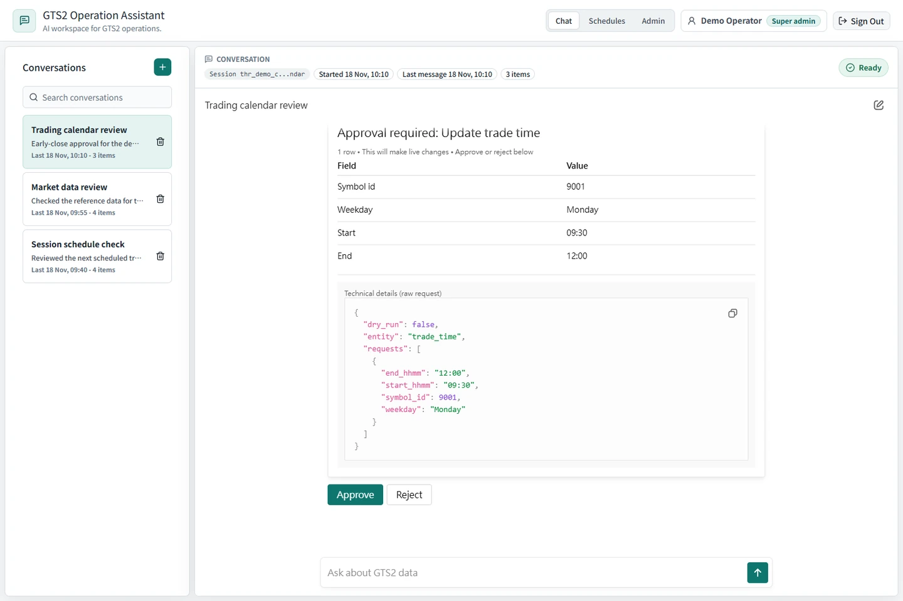
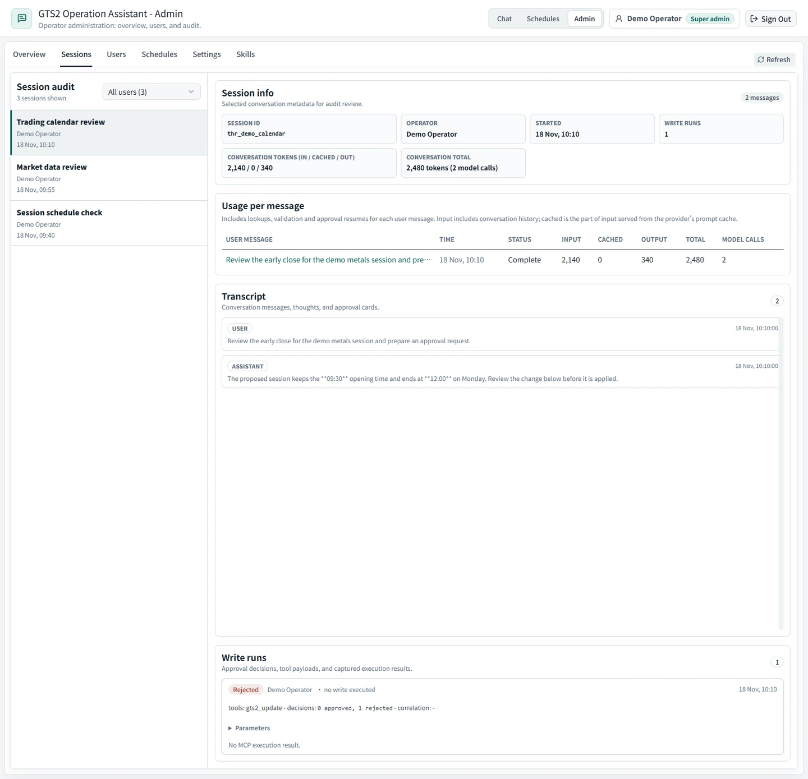

Answers trading data questions
The assistant can join, filter and summarize synchronized trading records through a read-only SQL tool. Each call respects the manager’s trading group and company permissions.
Plain-language analysis of brokerage trading data.
GTS2 is a trading platform that manages brokerage accounts, orders and positions. The GTS2 MCP server connects it to an AI assistant so managers can ask questions in chat, inspect the query and review proposed changes.

Solo Developer
I built both the MCP server that connects to the brokerage platform and the chat interface managers use. I designed the assistant to answer read-only questions directly and pause for human approval before applying a proposed change.
The assistant can join, filter and summarize synchronized trading records through a read-only SQL tool. Each call respects the manager’s trading group and company permissions.
Write tools are opt-in and permission-gated. In Ops Chat, the agent pauses and shows the proposed change. The operator approves or rejects it, and the app processes that decision only once.
Ops Chat records approval requests, decisions and execution outcomes. PostgreSQL persists the conversation and paused run so reviewers can follow what happened.
FastMCP serves tools over Streamable HTTP. The server resolves the manager identity and checks permissions before dispatching requests to the read store or the GTS2 gateway.
Resolves the manager identity, checks tool rights and data scope, and records redacted audit events.
These screenshots show the local Ops Chat interface with synthetic records. Select an image to enlarge it.
The demo asks for position and account counts for one trading group. EURUSD ranks first with 18 of the group’s 40 open positions across nine accounts.
The chat replays a prepared example using results from a read-only query on synthetic data.

Review the proposed trading session hours and the underlying request before making a decision.

The session audit links the proposed change to the conversation and records the rejection and its outcome.